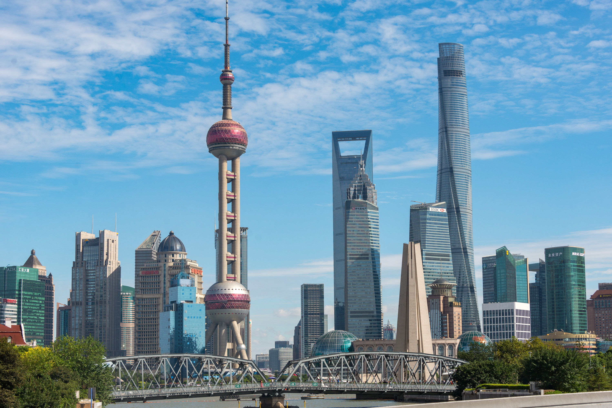

En este viaje vamos a ir a 3 ciudades:Shanghái,Pekín y Hangzhou.
Shanghái, en la costa central de China, es la ciudad más grande del país y un núcleo financiero mundial. Su centro es el Bund, un famoso paseo costero con edificios de la época colonial. Al otro lado del río Huangpu se alza el perfil futurista del distrito de Pudong, con la Torre de Shanghái de 632 m de alto y la Torre Oriental Pearl TV, con sus esferas rosa características. El extenso Jardín Yu tiene pabellones tradicionales, torres y estanques.

Pekín, la enorme capital de China, tiene una historia que se remonta a 3 milenios. Aun así, es conocida tanto por su arquitectura moderna como por sus sitios antiguos, como el complejo de la Ciudad Prohibida, el palacio imperial durante las dinastías Ming y Qing. Cerca, en la enorme plaza peatonal de Tiananmén, se encuentra el mausoleo de Mao Zedong y el Museo Nacional de China, que exhibe una amplia colección de reliquias culturales.
Hangzhou, la capital de la provincia china de Zhejiang, es el terminal más austral del antiguo Gran Canal, que se origina en Pekín. El lago del Oeste, celebrado por poetas y artistas desde el siglo IX, abarca islas (a las que se puede llegar en bote), templos, pabellones, jardines y puentes arqueados. En su orilla sur, se encuentra la pagoda Leifeng de 5 pisos, una reconstrucción moderna de una estructura construida en el año 975.